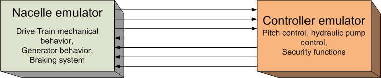

Each Wind Turbine consists of two sets of subsystems: one that simulates each and every subsystem in the Nacelle and another that simulates the Controller of the overall system. Both are software artifacts, and the Controller emulator uses original components from a real Controller for a Wind Turbine.

In the real case, the Nacelle components and the Controller are connected with wires or some electrical connection media (a bus for example). In this simulator we mimic that situation and both parts are connected through software connections that correspond to electric connections in the real Wind Turbines. Each Wind Turbine has its own set of operational parameters and its own set of connections. With this approach we are able to "simulate" real problems, such as broken or loose cable connections.
All these elements (Controller + Nacelle+Parameters+Connections) work in stand alone mode in the background.
The connections of a real Wind Turbine with the external world (besides the Power connection to the Grid), is through two interfaces:
a) the connection to the SCADA system.
b) the connection with a local terminal, known as Control Terminal.
Using this Control Terminal the Service Personnel has full control of the functionalities of the Wind Turbine.
This simulator follows exactly the same approach and the Controller simulator has an associated synoptic, that emulates the Control Terminal of the Wind Turbine.
The LdP framework that this simulator is based on, works on the paradigm of operational blocks that are "logically wired". This paradigm is similar to the way electronic components are designed and used: each component has an specific behavior and they are wired together in order to create a larger system with a more complex behavior.
In the LdP framework the building blocks (simulators) has "input signals" and "output signals", each one with its corresponding "pin". Each pin that has a name. A configuration file specifies the building blocks and the connections between output and input signals. One output signal can be connected to none, one or more input signals. One input signal can be connected to none or one output signals.
In the LdP framework the connection and disconnection of input and output signals can be done at any time, even while the simulation is running.